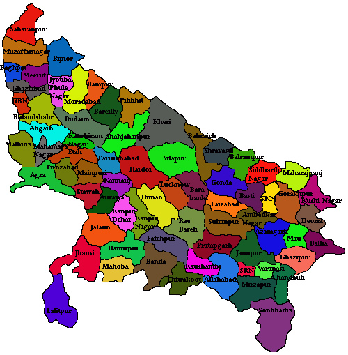

LET'S HAVE A LOOK AT THE TOUR MAP
WHERE TO VISIT , WHAT TO SEE?
SOME HOT PICKS(#HAVE_TO_VISIT)
- AGRA - FAMOUS FOR THE TAJ MAHAL, ONE OF THE SEVEN WONDERS OF THE WORLD
- VARANASI - HOLY CITY LOCATED ON THE BANKS OF RIVER GANGA
- VRINDAVAN - BELIEVED TO BE THE PLACE WHERE LORD KRISHNA GREW UP
- LUCKNOW - CITY OF NAWABS, ISLAMIC ARCHITECTURES
- ALLAHABAD - MEETING POINT OF RIVER GANGA, YAMUNA AND SARASWATI , KUMBH MELA LOCATION
- MATHURA - BIRTHPLACE OF LORD KRISHNA
- SARNATH - CITY OF BUDDHIST STUPAS
- VINDHYACHAL - FAMOUS HINDU PILGRIMAGE SPOT
- CHITRAKOOT - MYTHOLOGICALLY THIS IS THE PLACE WHERE LORD RAMA ,HIS WIFE SITA AND BROTHER LAKSHMANA SPENT ELEVEN AND HALF YEARS OF THEIR FOURTEEN YEARS OF EXILE
- AYODHYA - BIRTHPLACE OF LORD RAMA, RAM JANMABHOOMI AND FOR ISLAMS THE BABRIMASJID
- NATIONAL CHAMBAL WILDLIFE - MAIN ATTRACTIONS ARE GHARIAL, RED CROWNED TURTLE , GANGETIC DOLPHINS
- JHANSI - HISTORIC CITY OF THE LADY WARRIOR LAKSHMI BAI
- HASTINAPUR - CENTER OF THE GLORIOUS EPIC MAHABHARATA
- FIROZABAD - THE CITY OF BANGLES
- FATEHPUR SIKRI
- BATESHWAR TEMPLE - ORIGINALLY PLACE OF THE DACOITS OF CHAMBAL
- FORT OF UNCHAGAON
- DEWA SHARIF
OTHER_ATTRACTIONS
- DUDHWA NATIONAL PARK - RICH DIVERSITY OF FLORA AND FAUNA
- NOIDA
- KANPUR - INDUSTRIAL CAPITAL
- MUZZAFAR NAGAR - MONUMENTS OF MUGHAL PERIOD
- GHAZIABAD - GATEWAY OF UTTARPRADESH
- MEERUT - RICH CULTURE
- LONI
- KUSHINAGAR - SPIRITUAL EXCURSIONS
- BARSANA - BIRTHPLACE OF MATA RADHA
- SHRAVASTI - SACRED PLACE OF HINDU PILGRIMAGE
- BITHOOR
- NAWABGANJ BIRD SANCTUARY